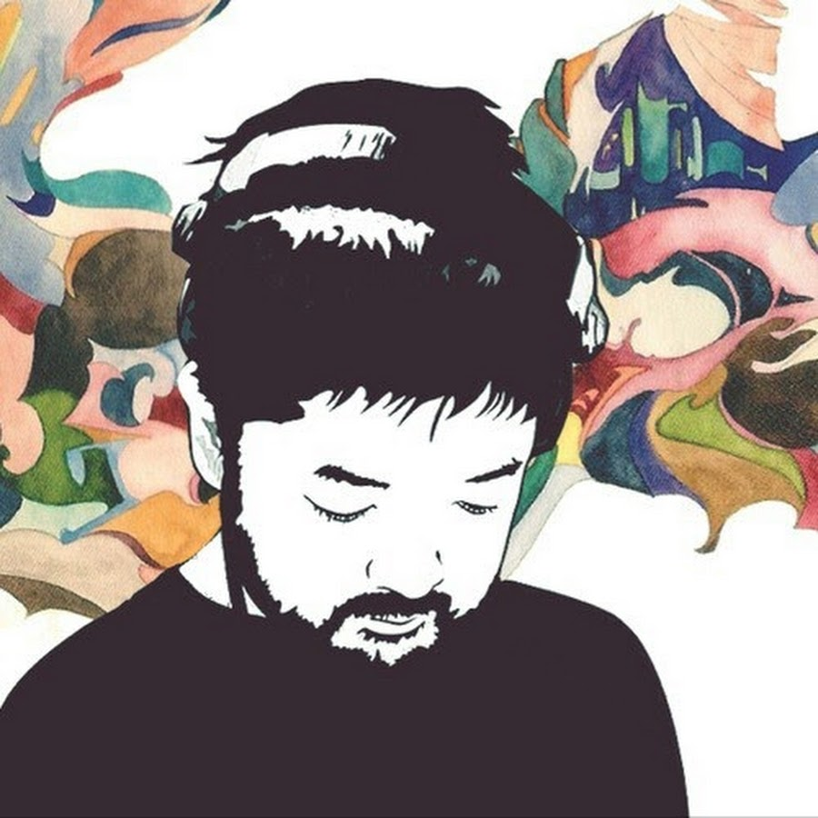

Nujabes
A mind full of metaphorical music

Seba Jun (Nujabes) revolutionized the hip-hop genre and is credited for the popularity and massification of lo-fi hip-hop in recent years
Jun Seba (瀬場潤 Seba Jun, 7 February 1974 - 26 February 2010), better known by his stage name Nujabes, was a Japanese record producer and DJ. His stage name is the reverse spelling of his name in its traditional Japanese order (Seba Jun). He was the owner of the Shibuya record stores, T Records and Guiness Records, and founder of the independent label Hydeout Productions. He is considered one of the greatest producers of his generation and genre and received widespread acclaim for his unique and innovative approach to hip hop production.
Source: Hip-Hop WikiHere are some facts about Jun
- He has collaborated with many underground rappers and artists from all over the world. His most influential works include names such as Shing02, Substantial and FunkyDL, just to name a few.
- Alogside fellow creator J Dilla, they are considered the masterminds behind the lo-fi hip-hop genre
- He passed away after an unfortunate and tragic car accident on February 26, 2010.
- His most popular project, a collaborative hexalogy which he produced and featured his good friend, rapper Shing02, in the vocals, was completed after his death and is still regarded as his most influential work and a masterpiece that redefined the genre.
"Whether a tree lives to see the end of centuries
Or a random hand picks it instantly
Life is art, a miracle for all to see
I must tell you that you lived beautifully"
-- Shing02 (Luv Sic. Part 5)
Or a random hand picks it instantly
Life is art, a miracle for all to see
I must tell you that you lived beautifully"
-- Shing02 (Luv Sic. Part 5)